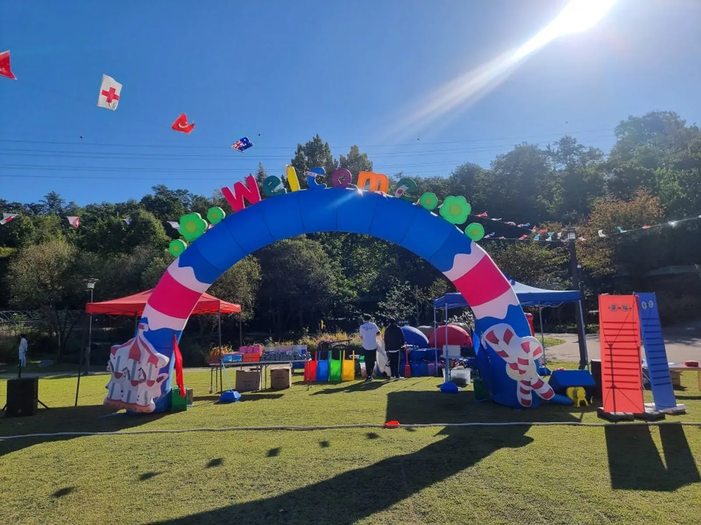

강동 천막 의자 대여는 수량보다 자리 배치를 먼저 그리는 것이 순서입니다. 본부석 · 응원석 · 어르신 쉼터 · 물품 보관 자리가 어디에 몇 개 필요한지 운동장 그림 위에 표시하면 천막과 의자 수는 저절로 나옵니다. 예그리나는 운동회 · 야외 행사용 천막과 의자를 놀이기구 · 게임도구와 함께 준비할 수 있고, 남양주 별내 사무실에서 강동구청까지 차로 약 25분 · 25.3km 거리입니다.

- 천막 · 의자 수량은 운동장 그림에 자리를 먼저 표시한 뒤 계산하면 빠지지 않습니다.
- 본부석 · 반별 응원석 · 어르신 쉼터 · 물품 보관 자리는 거의 모든 운동회에 필요합니다.
- 천막은 해가 움직이는 방향을 생각해 그늘이 응원석에 떨어지게 둡니다.
- 바람이 세면 천막을 고정하거나 접어야 하니 바람 예보를 함께 봅니다.
- 렌탈은 한 달 전부터 예약할 수 있습니다.
1. 강동 천막 의자 대여 전에 그릴 자리 배치도
천막과 의자는 「몇 개 빌릴까」부터 생각하면 꼭 하나씩 모자랍니다. 운동장이나 행사장 그림을 한 장 그리고, 아래 자리들을 먼저 표시해 보세요.
| 자리 | 쓰임 | 놓는 곳 |
|---|---|---|
| 본부석 | 사회 · 진행 · 시상품 보관 | 경기장 전체가 보이는 가운데 |
| 반별 응원석 | 아이들이 경기 사이에 앉는 곳 | 경기장 한쪽 긴 변 |
| 학부모 · 어르신 쉼터 | 가족이 쉬는 곳 | 응원석 뒤나 옆 그늘진 쪽 |
| 물품 보관 | 게임도구 · 가방 보관 | 본부석 옆, 통로에서 떨어진 곳 |
| 응급 · 쉼 자리 | 다친 아이 · 지친 아이가 쉬는 곳 | 본부석 가까이, 조용한 쪽 |
2. 수량 잡는 법
자리를 정했으면 자리마다 앉을 사람 수를 적습니다. 의자는 응원석 · 쉼터 인원을 기준으로, 천막은 그늘이 필요한 자리 수를 기준으로 잡습니다.
- 반별 응원석 — 반 수와 반별 아이 수를 적습니다.
- 학부모 · 어르신 — 오는 가족 수를 대략 잡고, 어르신 자리는 따로 셉니다.
- 본부석 — 진행 인원과 내빈 수를 셉니다.
- 여유분 — 당일 늘어나는 인원을 생각해 조금 더 잡습니다.
- 필요 없는 자리 — 관람석이 있는 운동장이라면 의자 수를 줄입니다.
테이블처럼 사이트 품목에 없는 물품이 필요하면 학교 · 원 · 교회에 있는 것을 쓸 수 있는지 먼저 확인해 주세요.

3. 그늘 방향과 바람
천막을 세웠는데 오후가 되니 그늘이 응원석이 아닌 통로에 떨어지는 일이 흔합니다. 행사 시간대에 해가 어느 쪽에 있을지 생각해 천막 방향을 정하세요.
- 오전 행사와 오후 행사는 그늘 방향이 다릅니다.
- 천막 다리는 바람에 대비해 고정합니다.
- 바람이 세지면 천막을 접는 것이 안전합니다. 기상청 강풍 기준은 포천 운동회 우천 대비 글에 정리했습니다.
- 천막 사이 통로는 유모차와 휠체어가 지나갈 만큼 비워 둡니다.
4. 천막 · 의자와 함께 준비하면 좋은 것
천막과 의자만 따로 빌리면 놀이기구 · 게임도구 업체와 시간을 따로 맞춰야 합니다. 예그리나는 운동회 · 야외 행사 편의시설로 천막과 의자를 렌탈하고, 아래 품목도 함께 준비할 수 있습니다.
| 품목 | 쓰임 |
|---|---|
| 환영 아치 · 포토존 | 입구 꾸미기 · 가족 사진 자리 |
| 체육용품 · 만국기 | 운동장 분위기 · 경기 도구 |
| 운동회 게임도구 | 단체 경기 · 연령별 경기 |
| 에어바운스 | 경기 사이 놀이 공간 |
| 민속놀이 기구 | 운동회 · 명절 행사 |
5. 강동에서 견적 문의할 때
강동구(서울)는 예그리나 별내 사무실에서 강동구청까지 차로 약 25분 · 25.3km(막히지 않을 때)입니다. 행사장이 구 안 어디든(천호동 · 길동 · 암사동 · 고덕동 · 명일동 · 둔촌동 · 강일동 등) 행사 시작 전에 설치를 마칩니다. 강동 안내는 강동구 행사 안내에 있습니다.
| 항목 | 알려 주실 것 |
|---|---|
| 천막 | 필요한 자리 수 · 설치 바닥(흙 · 잔디 · 실내) |
| 의자 | 응원석 · 쉼터 · 본부석 인원 |
| 운반 · 설치 · 철수 | 설치 가능 시간 · 철수 시간 |
| 어린이집 · 유치원 운동회 | 프로그램 진행까지 맡길지 |
렌탈은 한 달 전부터 예약할 수 있습니다. 자동 견적서에서 항목을 골라 보내 주세요. 자동 견적서는 금액을 보여 주지 않으며, 비용은 상담 후 안내합니다.
자주 묻는 질문
천막과 의자만 빌릴 수도 있나요?
천막 · 의자 등 편의시설 렌탈은 따로 문의하실 수 있습니다. 필요한 수량과 날짜를 알려 주세요.
설치와 철수는 누가 하나요?
운반 · 설치 · 철수를 함께 맡길 수 있습니다. 설치 가능한 시간과 철수 시간을 미리 알려 주세요.
실내 행사에도 천막을 쓰나요?
실내 체육관이나 강당에서도 본부석 · 물품 자리를 나누는 용도로 천막을 쓰기도 합니다. 천장 높이와 바닥 보호 규정을 먼저 확인해 주세요.
천막을 세울 바닥이 잔디나 인조잔디여도 되나요?
바닥 종류에 따라 고정 방법이 달라집니다. 흙 · 잔디 · 인조잔디 · 실내 중 어디인지와 시설에서 정한 바닥 보호 규칙을 알려 주시면 상담에서 설치 방법을 함께 정합니다.
의자 수를 정확히 모르면 어떻게 하나요?
반 수와 대략의 가족 수만 알려 주셔도 상담을 시작할 수 있습니다. 인원이 확정되는 대로 수량을 다시 맞춥니다.